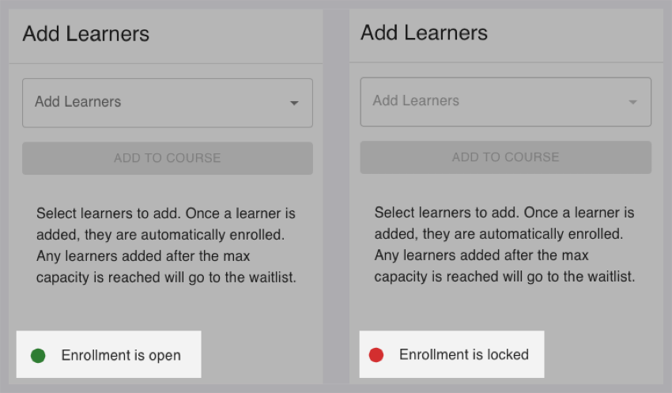
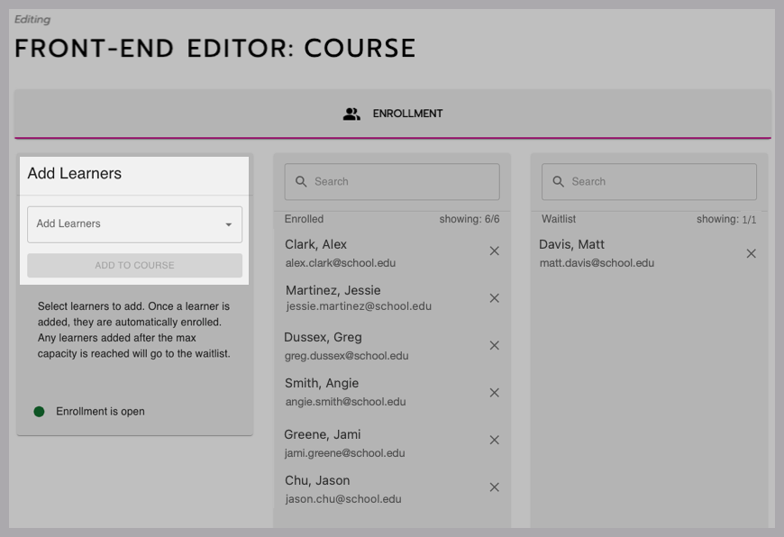
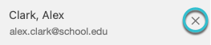
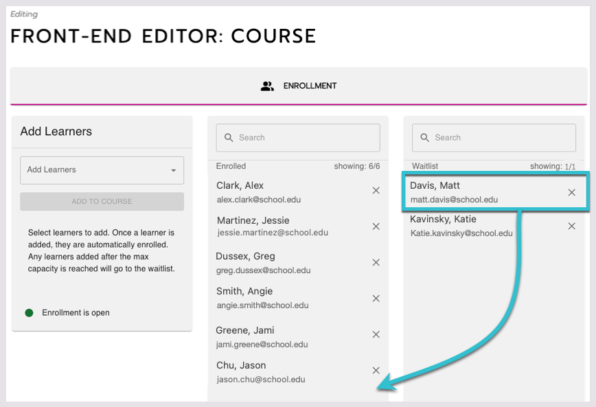

Enroll, unenroll, and waitlist learners This document was originally published on help.junolive.com. You can enroll, unenroll, and waitlist learners in courses. 🔓 Who can manage learner enrollment? Site admins can manage enrollment for all learners. Managers can only see and manage enrollment for learners in their admin group. See User types and permissions for learning management to learn more about admin groups. They can manage it even when learners are allowed to self-enroll. Enrollment settings are handled separately from enrollment itself. Managers don’t have access to change settings, but other user types do. Learn how to edit enrollment settings. Enrollment settings Courses might have been set up in the following ways, which impact how you enroll learners. Self-enrollment and enrollment requests The course might have been set up in one of two ways: Require enrollment requests. Learners request enrollment by contacting you. Make sure your learners know who to contact and how (by email, for example.) When you get an enrollment request, go into the course’s front-end editor to add the learner. Instructions are below. Allow self-enrollment. Learners can enroll themselves. They click an Enroll button and are automatically added. But you can still manage learners by unenrolling them or manually enrolling them if needed. Learn more about what learners see during the enrollment process. Enrollment dates (Open or locked) The course was set up with an Open Enrollment Date and a Close Enrollment Date. Outside of these dates, you can’t enroll or unenroll learners. They also can’t be added or removed from the waitlist. When enrolling learners, you can see the course’s status at the bottom of the Add Learners panel. It either says Enrollment is open or Enrollment is locked. If needed, enrollment can be unlocked by changing the Close Enrollment Date.  Figure 1. The status indicator changes when enrollment is locked. Enroll or waitlist learners When enrollment is open: Go to one of the course catalog pages on your site (where multiple courses are listed). Scroll to the bottom of the page and select Edit. Select the course you want to edit. Select the Enrollment tab. Select a learner from the Add Learners dropdown menu. You can also type a name to search. Select Add to Course to add them to the Enrolled list. If there is a set course capacity and it’s full, they will automatically be moved to the Waitlist Learner(s) field. The learner gets an email and profile notification that they have been enrolled or waitlisted.  Figure 2. Adding learners in the Enrollment tab. Unenroll learners To remove learners from the enrollment list or waitlist, select X next to their name.  How do learners move from the waitlist to the enrollment list? When you unenroll someone from a course that’s at capacity, the learner at the top of the Waitlist is automatically moved to the Enrolled list. They get an email and profile notification that they have been enrolled.  Figure 3. This learner at the top of the waitlist would move to the enrolled list if an enrolled learner was removed. Reorder learners on the waitlist 🔓 Who can reorder the waitlist? Only site admins. In the Waitlist, learners are ordered by the date they were added. Click and drag a learner to reorder them. Select Save at the top of the page to save your changes.